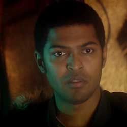

|
| Home | The Doctors | The Companions | The Villains | Show History |
Mickey SmithMickey Smith is a fictional character portrayed by Noel Clarke in the British science fiction television series Doctor Who. The character is introduced as the ordinary, working class boyfriend of Rose Tyler (Billie Piper), a London shopgirl who becomes a travelling companion to the Ninth and Tenth incarnations of an alien Time Lord known as the Doctor. Mickey first appears in the first episode of the 2005 revival, "Rose". Initially someone who struggles in the face of danger, Mickey nevertheless acts as an Earth-based ally to the Doctor and Rose. In the second series he joins the pair as a second companion of the Doctor's, though leaves during the 2006 series to pursue his own adventures. He returns to aid the Doctor and Rose in the series finale later that year, and then again for the 2008 finale "Journey's End," as well as fleetingly in 2010 in the Tenth Doctor send-off The End of Time.
|
Brendan Davey Monica DuCong'e Erik Eyler Kayleen Garcia Katie Hyche Ryan Moeller |
Christine O'Brien Alex Recinos Julia Schwartz Madeleine Schwartz Ann Marie Skjold Ashly Wilkins |
[Reference Links] |